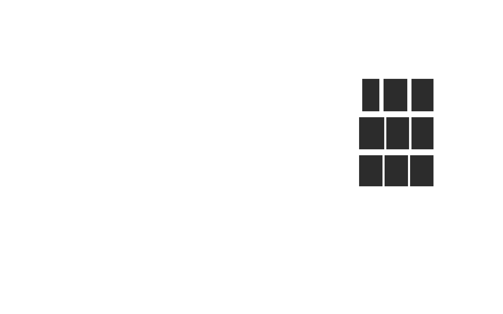
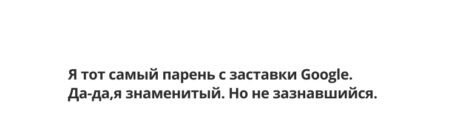
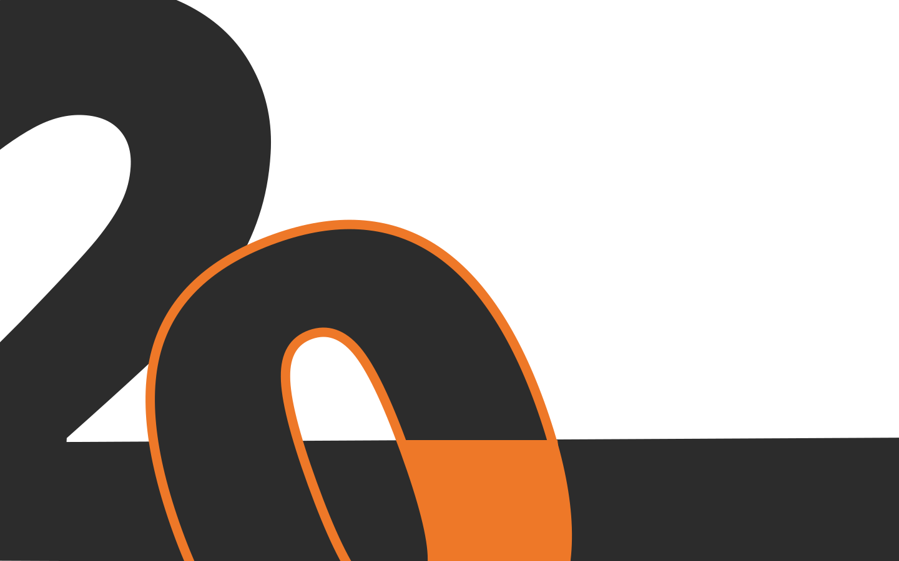
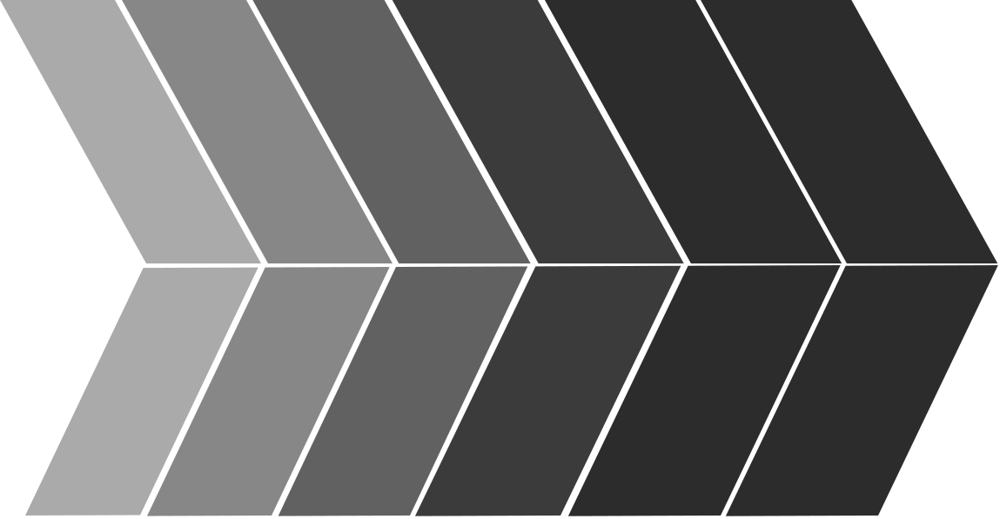
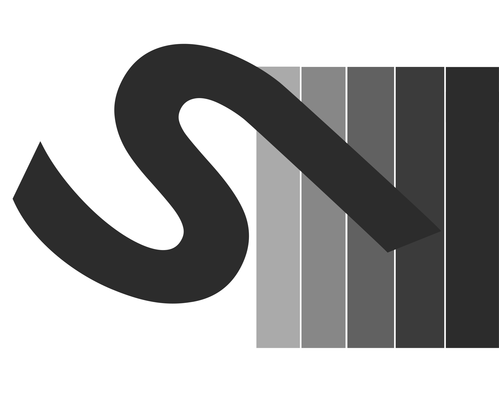
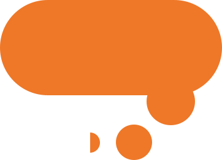
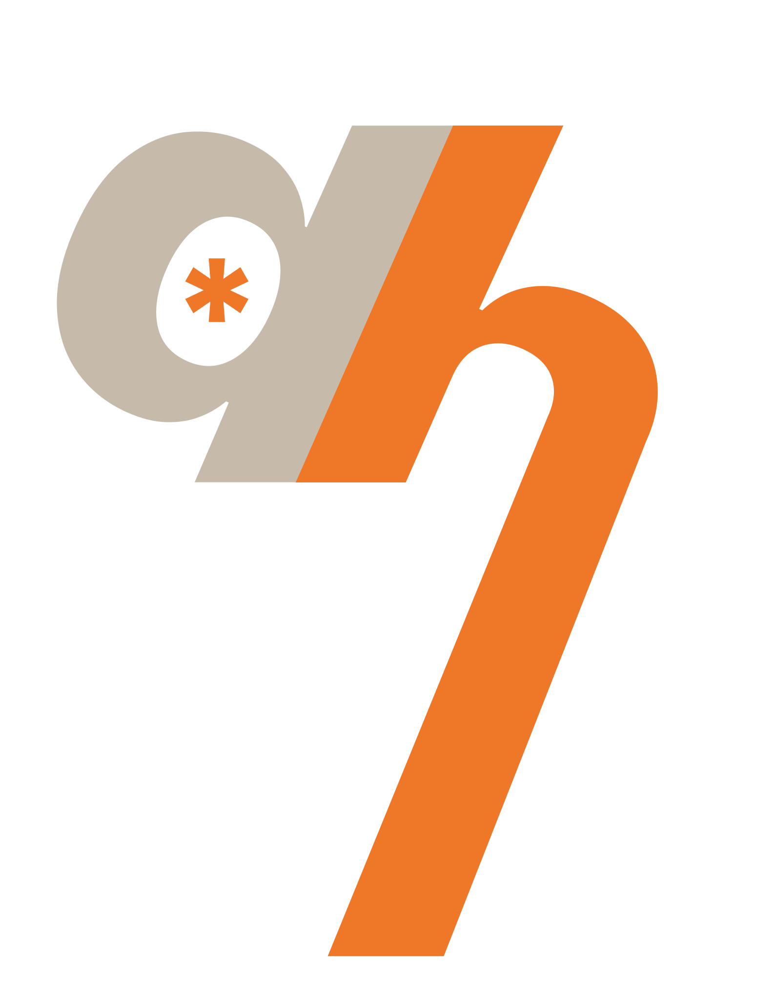
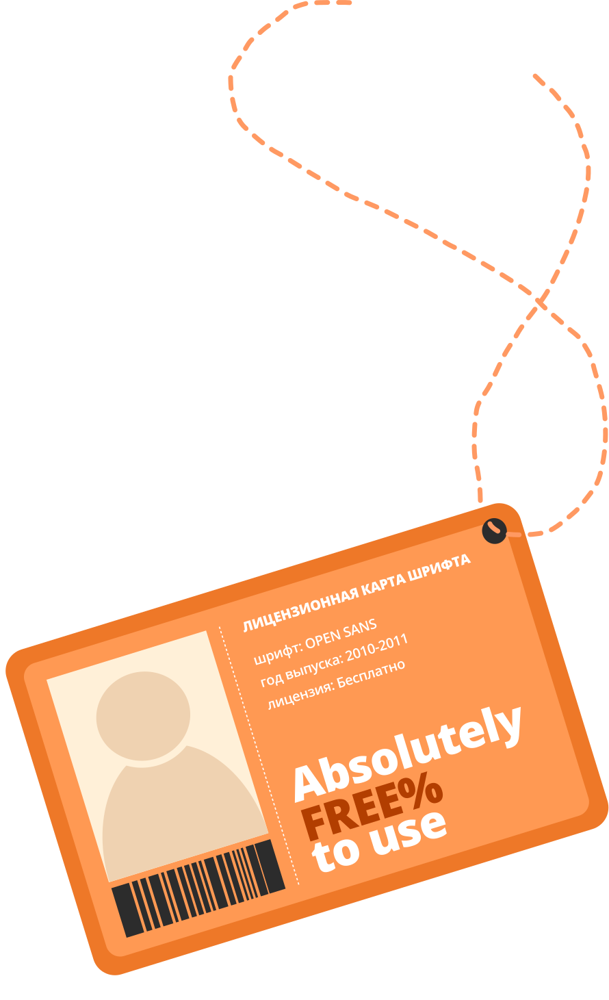

ЛАТИНИЦА
КИРИЛЛИЦА


1
2
3
4
5
6
7
8
9
Семейство свободных шрифтов, разработанных
Стивом Мэттсоном по заказу Google.
По данным Google, он был спроектирован
с прямым штрихом, открытыми формами
и нейтральной, но дружественной внешностью,
а также оптимизирован для удобочитаемости
при печати, в мобильных и веб интерфейсах.

Шрифт характеризуется широкими апертурами
во многих буквах и большой высотой cтрочных
(x-height), что делает его хорошо читаемым
на экранах и при малых размерах.
По состоянию на июль 2018 года Open Sans является
вторым по распространенности шрифтом в Google
Fonts, ежедневно его просматривают более четырех
миллиардов раз, на более чем 20 миллионах сайтов.

Мне можно поручить всё: от заголовка про скидку на пиццу
до скучного юридического договора. Я не испорчу ни то,
ни другое, обещаю.

Мастер перевоплощений: У меня есть 5 весовых
категорий (Light, Regular, Semibold, Bold, Extra Bold).
Я могу быть нежным как котёнок (Light) или жирным,
как котик после Нового года (ExtraBold).
А также поддерживаю как кириллицу, так и латиницу.
А
А
А
А
А
А
А
А
А
А


Hello, i'm your font!

Привет, я твой шрифт!
ЛАТИНИЦА
КИРИЛЛИЦА


1
2
3
4
5
6
7
8
9

Один шрифт —
бесконечные возможности
сочетаний и настроений
Open Sans — как идеальные джинсы: подходит ко всему,
не напрягает и выглядит отлично даже в восьмой понедельник подряд.
Бесплатный, как воздух, и читается на любом устройстве —
от умных часов до старого телевизора бабушки.

Хоть на футболке напечатай, я не обижусь.
BY
STEVE
MAT
TESON

Студент
Мацкевич Яна
Куратор
Цветников Николай
Группа
Б25ДЗ11